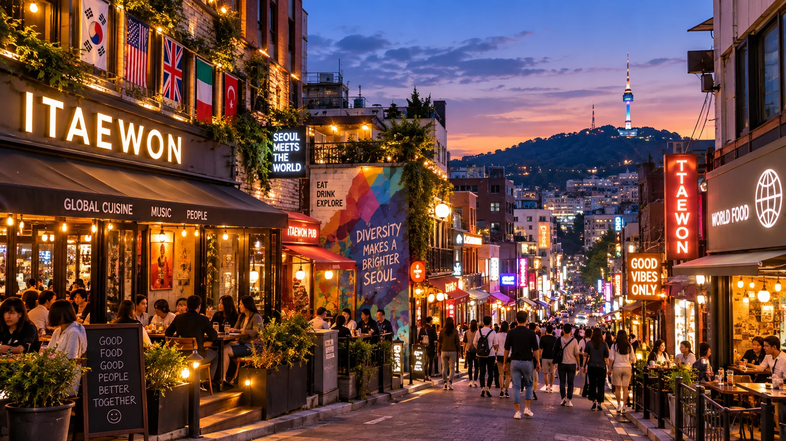

Guide d’Itaewon à Séoul 2026 : Hannam, restaurants et sorties

Itaewon devient plus facile à comprendre lorsqu’on cesse de le réduire à une seule rue.
Commencez autour de Hannam et de Hangangjin si l’art, le design et le shopping vous intéressent. Rejoignez le centre d’Itaewon pour les cuisines du monde et les services adaptés aux voyageurs musulmans. Choisissez ensuite votre soirée : un bar plus calme vers Gyeongnidan, une étape sur les hauteurs de Haebangchon ou les principales rues de sorties d’Itaewon.
Pour un premier séjour court axé sur les palais, les quartiers traditionnels et les grands sites de Séoul, Itaewon n’est pas obligatoire. Si vous privilégiez la cuisine, l’art, les cultures internationales ou les soirées, il peut jouer un rôle très différent de Myeongdong, Insadong ou Hongdae.
Pourquoi Itaewon mérite toujours une visite
Itaewon est souvent réduit à sa vie nocturne, qui n’est pourtant qu’une facette du quartier.
À l’est, Hannam et Hangangjin se prêtent mieux à un après-midi d’art, de design et de shopping. Le centre d’Itaewon concentre les restaurants internationaux, les services adaptés aux musulmans et les principales sorties nocturnes. À l’ouest, vers Noksapyeong, Gyeongnidan et Haebangchon, les rues offrent plutôt de petits bars, des cafés, des restaurants de quartier et une soirée plus tranquille.
C’est ce contraste qui donne tout son intérêt à un parcours bien choisi.
Si vous venez seulement voir une rue commerçante célèbre, Itaewon peut vous sembler limité. Avec un projet précis pour l’après-midi et la soirée, Itaewon devient beaucoup plus pertinent dans votre programme.
Pour décider simplement
Itaewon mérite une place dans votre programme si au moins l’un de ces points compte pour vous :
- Leeum Museum of Art ou Hannam
- les cuisines du monde ou les repas halal
- les bars, les clubs ou les rencontres avec d’autres voyageurs le soir
- une soirée de quartier vers Gyeongnidan ou Haebangchon
- un visage de Séoul moins centré sur les palais et les visites traditionnelles
Lors d’un premier séjour très court, Itaewon peut attendre si rien de tout cela n’est prioritaire.
Itaewon regroupe en réalité quatre secteurs
Le nom « Itaewon » recouvre un espace plus vaste que beaucoup de nouveaux visiteurs ne l’imaginent.
Vouloir tout parcourir à pied comme un seul quartier commerçant plat est souvent le point de départ des erreurs de programme.
Hannam et Hangangjin
Choisissez ce côté pour Leeum Museum of Art, les galeries, le design, la mode, les espaces d’exposition de marques et un après-midi plus raffiné.
C’est le meilleur point de départ si vous attendez du quartier davantage qu’un dîner et des sorties nocturnes.
Le centre d’Itaewon
C’est le secteur autour de la station Itaewon.
Venez-y pour les restaurants internationaux, les rues autour de la mosquée centrale de Séoul, le principal axe commerçant et la plus forte concentration de sorties nocturnes.
C’est l’image que la plupart des visiteurs associent à « Itaewon », mais la visite ne se limite pas à cela.
Noksapyeong et Gyeongnidan
Ce côté convient si vous voulez dîner, profiter des cafés et des bars sans faire des clubs le centre de la soirée.
Il constitue aussi une transition pratique vers Haebangchon.
Haebangchon
Haebangchon est l’option sur les hauteurs.
On y vient pour les petits restaurants, cafés, bars, ateliers et rues de quartier. La pente fait partie de la réalité du lieu, ce n’est pas un détail à découvrir en arrivant.
Commencez par Hannam et Hangangjin
Si vous avez l’après-midi, commencez à l’est plutôt que de rejoindre directement la station Itaewon.
Hangangjin offre un accès pratique à Leeum et au secteur de Hannam. Vous pouvez y consacrer du temps à l’art, au shopping ou à un rendez-vous avant de rejoindre le centre d’Itaewon pour manger.
Cet ordre compte : Hannam se visite plus facilement en journée, tandis que le centre d’Itaewon devient plus intéressant à l’approche du dîner et de la soirée.
Inutile de collectionner les boutiques de marques ou les cafés. Choisissez une raison de venir, puis poursuivez votre journée.
Si le shopping à Hannam est votre priorité
Abordez Hannam comme un quartier où choisir quelques adresses, plutôt que comme une liste à épuiser.
Enregistrez avant de venir les boutiques ou marques qui vous intéressent vraiment. La mode et les espaces d’exposition de marques peuvent changer vite : une adresse citée dans un ancien guide ne mérite plus forcément de traverser le quartier.
Si le shopping vous intéresse peu, ne passez pas tout l’après-midi à vouloir faire de Hannam une attraction commerciale.
Si vous souhaitez un rendez-vous de beauté coréenne
Un rendez-vous de coiffure, de maquillage ou de head spa peut s’intégrer naturellement à un après-midi à Hannam en donnant un objectif précis à cette étape.
La contrepartie est le temps : une fois le rendez-vous réservé, le reste de l’après-midi doit s’organiser autour.
La proximité ne suffit pas à justifier une réservation de soin.
Faut-il consacrer du temps à Leeum ?
Allez à Leeum si l’art, l’architecture ou le design fait réellement partie de votre voyage.
Sinon, passez votre chemin sans culpabiliser.
Cela paraît évident, mais Leeum est souvent ajouté uniquement pour sa proximité avec Hannam. Un musée peut facilement occuper le meilleur créneau de l’après-midi : la visite doit donc justifier ce temps.
Informations officielles de visite, vérifiées le 19 septembre 2026 :
- ouvert du mardi au dimanche, de 10 h à 18 h
- fermeture de la billetterie à 17 h 30
- fermé le lundi
- fermé le 1er janvier, le jour du Nouvel An lunaire et le jour de Chuseok
- l’exposition permanente d’art ancien et le jardin Gabriel Orozco sont actuellement gratuits
- certaines expositions temporaires sont payantes
- les réservations individuelles ouvrent 14 jours avant la visite
- l’achat de billets sur place est possible, mais de l’attente peut survenir lorsque les galeries sont fréquentées
Depuis la sortie 1 de la station Hangangjin, l’itinéraire officiel du musée comprend environ cinq minutes de marche en montée après avoir quitté la rue principale.
Ce dernier détail compte si vous êtes déjà fatigué ou portez plus qu’un petit sac pour la journée.
Préparez la visite de Leeum avec soin
Le lundi, la visite est impossible d’emblée.
Un grand sac peut aussi vous ralentir, car des règles s’appliquent à leur taille et à l’accès aux galeries. Si vous avez des bagages ou changez d’hôtel, gardez le musée pour un autre moment plutôt que de le coincer entre le départ et l’arrivée à l’hôtel.
Rejoignez le centre d’Itaewon
Après Hannam, le centre d’Itaewon marque le passage des découvertes aux repas et aux projets de soirée.
Inutile de précipiter cette transition. Vous pouvez parcourir une partie du trajet à pied si la météo et votre énergie le permettent, ou prendre la ligne 6 pour un court trajet entre stations.
.webp)
L’essentiel est de ne pas traiter chaque pâté de maisons entre Hannam et la station Itaewon comme une nouvelle attraction.
Gardez votre énergie pour la soirée dont vous avez vraiment envie.
Choisissez votre raison de manger à Itaewon
La cuisine est l’une des meilleures raisons de préférer Itaewon à un autre quartier de Séoul.

La bonne question n’est pas : « Quels sont les meilleurs restaurants d’Itaewon ? »
Mais : « Qu’ai-je envie de manger ici pour profiter de cette journée ? »
Les cuisines du monde pour varier les repas
Itaewon concentre des restaurants internationaux qu’il serait plus difficile de réunir dans beaucoup d’autres quartiers de Séoul.
Cela peut compter après plusieurs jours de cuisine coréenne, pour un groupe aux goûts variés ou simplement si une cuisine précise fait partie du programme.
Traverser Séoul pour un repas ordinaire parce qu’une liste le dit célèbre vaut rarement la peine. Choisissez d’abord la cuisine ou le restaurant.
Le secteur halal si les services adaptés aux musulmans comptent pour vous
Les rues autour de la mosquée centrale de Séoul ne sont pas seulement un regroupement de restaurants.
Pour les voyageurs musulmans, le secteur a une utilité pratique : lieux de prière et commerces orientés vers les besoins halal s’y concentrent.
Le centre d’Itaewon dépasse alors le rôle d’étape touristique. Il peut faciliter l’organisation du reste de la journée.
Le poulet frit coréen si c’est le repas dont vous avez envie
Les cuisines du monde font partie de l’identité d’Itaewon, sans obliger chaque visiteur à en choisir une.
Si vous souhaitez surtout réserver un repas de poulet frit coréen, faites-le plutôt que de vous imposer le thème du quartier.
Kyochon Pilbang est actuellement une option sur réservation à Itaewon, avec des plats propres à cette adresse.
La mosquée centrale de Séoul et le secteur des restaurants halal
La mosquée centrale de Séoul est un lieu de culte actif, pas un simple arrêt photo.

Cette distinction doit guider votre visite.
Pour les voyageurs musulmans, la mosquée et les commerces voisins peuvent être un point de repère pratique pour prier, manger et faire des achats. Les visiteurs non musulmans qui entrent ou traversent le secteur doivent respecter le cadre religieux par leur tenue et leur comportement.
Privilégiez une tenue couvrante. Ne traitez pas les espaces de prière ni les fidèles comme un décor touristique.
Vérifiez le statut halal de chaque restaurant
La proximité de la mosquée ne suffit pas à déterminer comment qualifier les ingrédients, la cuisine ou la certification d’un restaurant.
Si vos exigences halal sont importantes, vérifiez le statut actuel de chaque restaurant plutôt que de vous fier uniquement à son emplacement ou à un ancien article de blog.
Cette petite vérification compte plus qu’une longue liste d’adresses qui « ont l’air halal ».
Ne vous limitez pas à la station Itaewon
Si vous venez seulement dîner, rester autour de la station Itaewon convient très bien.
Si vous voulez prolonger la soirée, c’est ici que les parcours se séparent.
En allant vers Noksapyeong, l’ambiance change. Gyeongnidan convient mieux pour un mélange plus calme de bars, de cafés et de restaurants. Haebangchon offre davantage de flânerie dans le quartier, mais ajoute aussi une vraie montée.
L’erreur est de considérer ces trois expériences comme interchangeables parce qu’elles semblent proches sur une carte.
Elles ne le sont pas.
Gyeongnidan pour une soirée plus calme
Gyeongnidan est la suite la plus adaptée si vous voulez prolonger la soirée sans rejoindre les principaux clubs d’Itaewon.

Gyeongnidan-gil se trouve à environ 788 mètres de la sortie 2 de la station Noksapyeong. Ses cafés, ses bars et ses restaurants variés créent une ambiance plus tranquille le soir que dans le centre d’Itaewon.
C’est donc un compromis utile.
Vous pouvez dîner, changer d’endroit pour un verre ou un dessert, puis repartir sans prolonger la soirée très tard.
À qui conseiller Gyeongnidan
- aux couples qui souhaitent une soirée plus tranquille
- aux amis qui préfèrent les bars aux clubs
- aux voyageurs qui veulent une dernière étape après le dîner
- à ceux qui veulent sortir sans organiser tout un parcours nocturne
Si vous souhaitez danser jusque tard, le centre d’Itaewon est le choix le plus direct.
Haebangchon : une montée qui doit correspondre à votre soirée
Haebangchon est assez proche pour paraître facile sur une carte, et assez pentu pour prouver le contraire.

Haebangchon se trouve à environ 1,2 km de la sortie 2 de la station Noksapyeong. La forte montée rend la partie haute du quartier plus difficile d’accès.
C’est ce qu’une liste de restaurants ne vous raconte pas.
Lorsque Haebangchon est la destination
La montée vers Haebangchon se justifie si vous recherchez :
- un quartier sur les hauteurs plutôt qu’une grande attraction
- de petits restaurants et bars
- des cafés et des lieux indépendants
- du temps pour flâner sans liste précise à suivre
C’est particulièrement raisonnable si vous connaissez déjà Séoul et ne cherchez plus à caser cinq grands sites dans la même journée.
La montée ne mérite pas toujours le détour
Gardez Haebangchon pour un autre jour si :
- vous avez déjà beaucoup marché
- quelqu’un dans le groupe a des problèmes de genoux ou de mobilité
- vous poussez une poussette
- la météo rend la montée désagréable
- vous voulez surtout dîner simplement puis rentrer à l’hôtel
Dans ces cas, Gyeongnidan ou le centre d’Itaewon peut vous offrir la soirée souhaitée avec moins de difficultés.
Envisagez de monter en bus ou en taxi
Si l’énergie manque, monter en bus ou en taxi puis redescendre à pied peut être plus raisonnable que de vouloir prouver que vous pouvez tout marcher.
C’est une possibilité, pas une règle. La météo, la circulation, la mobilité du groupe et l’adresse exacte comptent toujours.
Choisissez la soirée dont vous avez envie à Itaewon
Il n’y a pas une seule bonne façon de terminer votre visite d’Itaewon.
Décidez du type de soirée avant d’ajouter des adresses.
Option 1 — Dîner puis repartir
Si vous venez pour manger, le dîner peut constituer toute la visite.
Dînez, marchez un peu, puis rentrez à l’hôtel ou rejoignez un autre secteur de Séoul.
Il n’est pas nécessaire de rester tard pour justifier une visite à Itaewon.
Option 2 — Gyeongnidan
Choisissez ce secteur pour les cafés, les verres et une soirée plus tranquille.
Il convient à ceux qui recherchent une ambiance sans se lancer dans une longue soirée de sorties.
Option 3 — Haebangchon
Venez ici lorsque le quartier sur les hauteurs fait lui-même partie de l’expérience.
Prévoyez plus de temps et d’énergie que ne le suggère la carte.
Option 4 — Bars, tournée organisée ou clubs
Le centre d’Itaewon convient directement si vous voulez rencontrer du monde, visiter plusieurs bars ou aller en club.
Une tournée de bars accompagnée peut faciliter la soirée en solo ou lors d’une première découverte de la vie nocturne, puisque les lieux et le groupe sont organisés à l’avance.
Vérifiez les règles pratiques avant de réserver une sortie
Les offres de sorties nocturnes peuvent imposer :
- des créneaux de rendez-vous fixes
- une pièce d’identité
- des règles vestimentaires selon les établissements
- des restrictions d’âge
- l’absence de remboursement en cas de retard
Lisez les conditions actuelles de l’offre plutôt que de supposer qu’une sortie organisée à Séoul fonctionne comme une simple réservation de bar.
Un itinéraire d’une demi-journée et d’une soirée à Itaewon
Pour la plupart des voyageurs, une demi-journée suivie de la soirée est plus naturelle que de vouloir faire d’Itaewon une journée entière de visites.
13 h–15 h — Hannam / Hangangjin
Choisissez une priorité :
- Leeum Museum of Art
- shopping et espaces d’exposition de marques à Hannam
- rendez-vous beauté réservé
- cafés et flânerie
Essayer de réunir les quatre transforme généralement l’après-midi en liste à cocher.
15 h–17 h — Rejoindre le centre d’Itaewon
Choisissez quelques arrêts et avancez vers l’ouest.
C’est une transition, pas une nouvelle liste de visites.
17 h–19 h — Manger
Choisissez ce qui motive votre repas :
- cuisine internationale
- secteur halal / adapté aux voyageurs musulmans
- poulet frit coréen ou autre repas coréen réservé
Laissez assez de temps au dîner au lieu d’empiler les activités autour.
Après 19 h — Choisir la fin de soirée
Au calme : Gyeongnidan
Ambiance de quartier : Haebangchon
Vie nocturne : bars du centre d’Itaewon / tournée de bars / clubs
Soirée terminée : retour à l’hôtel
Cette seule décision évite de transformer la soirée en enchaînement d’adresses au hasard.
Si vous avez une journée entière
Une journée complète se justifie seulement si plusieurs facettes du quartier vous intéressent réellement.
Utilisez le temps supplémentaire pour :
- une visite plus longue de Leeum
- davantage de shopping à Hannam
- un rendez-vous beauté à heure fixe
- un repas pris tôt ou une pause-café
- une traversée plus tranquille d’Itaewon
- une soirée choisie avec soin
Avoir plus de temps ne justifie pas d’allonger le parcours.
Si votre matinée est libre mais que votre intérêt commence surtout au dîner, passez-la ailleurs à Séoul et arrivez à Hannam après le déjeuner.
À qui Itaewon convient-il, et qui peut s’en passer ?
Très adapté aux voyageurs qui privilégient la cuisine
Itaewon réunit des cuisines du monde et des options orientées halal parfois plus difficiles à regrouper ailleurs.
Venez avec une envie culinaire, pas une immense liste de restaurants.
Très adapté aux voyageurs musulmans
La mosquée et les services halal voisins apportent une utilité pratique au-delà des visites.
Cela peut influencer vos repas, vos temps de prière et l’organisation de la journée.
Très adapté aux amateurs d’art, de design et de shopping à Hannam
Commencez autour de Hangangjin et gardez le centre d’Itaewon pour la deuxième partie de la journée.
La visite sera très différente d’une arrivée à la station Itaewon le soir.
Très adapté aux couples et aux groupes qui privilégient la soirée
Vous pouvez choisir entre un dîner, des bars plus calmes, Haebangchon ou une vie nocturne plus animée.
La variété est l’atout.
Très adapté aux voyageurs qui connaissent déjà Séoul
Itaewon, Hannam et Haebangchon prennent plus de sens lorsque vous ne cherchez plus à passer chaque heure dans les grands sites de Séoul.
Selon vos priorités — premier séjour
Incluez Itaewon si la cuisine, l’art, les cultures internationales ou la vie nocturne font partie des raisons pour lesquelles vous avez choisi Séoul.
Si vous n’avez que deux ou trois jours et privilégiez les palais, les quartiers de hanok et le Séoul traditionnel, Itaewon peut attendre.
Selon vos priorités — voyage en solo
Les voyageurs seuls peuvent bien profiter du quartier, notamment des musées, des cafés et des sorties nocturnes.
Les repas demandent un peu plus de préparation, car certains restaurants et plats à partager conviennent mieux à deux personnes ou plus.
Pour sortir, une activité de groupe organisée peut être utile si vous ne souhaitez pas arriver seul dans les bars.
Selon vos priorités — voyage en famille
Leeum et un repas pris tôt peuvent bien fonctionner.
Un programme de sorties tardives ou une longue montée vers Haebangchon sont des choix moins évidents avec de jeunes enfants.
Construisez la journée autour des envies réelles de la famille, plutôt que de la réputation du quartier pour les soirées entre adultes.
Faut-il loger à Itaewon ou simplement venir en visite ?
Un dîner ou une soirée de sorties ne suffit pas à justifier de déplacer votre hôtel à Itaewon.
Loger ici devient plus pertinent si le quartier occupera plusieurs soirées, si les retours tardifs comptent ou si Hannam et Itaewon reviennent souvent dans votre programme.
Une visite suffit si Itaewon représente un après-midi et une soirée dans un séjour plus large à Séoul.
L’emplacement de l’hôtel compte plus que le mot « Itaewon » dans son nom. Les pentes, le bruit, la distance jusqu’à la station et le dernier trajet à pied peuvent changer le séjour.
Se déplacer sans sous-estimer les pentes
La ligne 6 est l’axe principal de métro de ce parcours :
- Hangangjin pour Hannam / Leeum
- Itaewon pour le centre du quartier
- Noksapyeong pour Gyeongnidan et l’approche de Haebangchon
Les stations donnent une impression de simplicité.
Les rues la nuancent.
Les 500 derniers mètres peuvent compter plus que le trajet en métro
La dernière partie du trajet vers Leeum est en montée.
Gyeongnidan demande de marcher depuis Noksapyeong.
Haebangchon ajoute de la distance et de la pente.
Un trajet qui paraît court sur un plan de transports peut donc être la partie fatigante de la journée.

Utilisez le taxi à bon escient
Un court trajet en taxi peut se justifier s’il évite une montée à pied à la fin d’une longue journée.
Le taxi n’est pas toujours plus rapide lorsque la circulation est dense le soir, et il n’a pas besoin de remplacer chaque marche. Utilisez-le pour le passage qui rendrait autrement le trajet désagréable.
L’accès à l’aéroport fait partie du choix d’hébergement
Si vous logez ici, vérifiez le trajet jusqu’à votre hôtel exact, pas simplement jusqu’à « Itaewon ».
Les lignes actuelles de bus de l’aéroport desservent des arrêts précis dans le secteur élargi, pas la porte de chaque hôtel.
Consultez le guide des hébergements à Itaewon pour choisir en fonction de votre hôtel.
Les erreurs pratiques à éviter
Considérer Itaewon comme un quartier compact et plat
Il n’est ni l’un ni l’autre.
Organisez la visite par petit secteur et selon le moment de la journée.
Aller à Leeum le lundi
Le musée est fermé le lundi.
Consultez les horaires officiels actuels avant d’organiser l’après-midi autour de cette visite.
Croire Haebangchon facile d’accès parce qu’il paraît proche
La distance n’est que la moitié du problème.
La pente peut être le facteur décisif.
Ne prévoir que la vie nocturne
Si les clubs ne vous attirent pas, Hannam, les cuisines du monde, Gyeongnidan et Haebangchon peuvent tout de même justifier la visite.
Se forcer à sortir tard parce qu’on est à Itaewon
Le dîner peut marquer la fin de la visite.
Vous n’êtes pas obligé de rester dehors tard.
Supposer que tous les restaurants près de la mosquée ont le même statut halal
Vérifiez chaque restaurant si vos exigences halal comptent pour vous.
Réserver trop de rendez-vous à heure fixe
Réservations de musée, rendez-vous beauté, dîner réservé et rendez-vous de soirée peuvent transformer un quartier en emploi du temps.
Limitez ces engagements fixes à un ou deux et gardez du temps pour marcher.
Changer d’hôtel pour une seule soirée
Un court trajet de retour vers un quartier mieux adapté à l’ensemble du séjour peut être plus simple que de changer d’hôtel et déplacer les bagages.
Avant toute réservation
Vérifiez quatre points avant de payer :
- L’emplacement — dans quelle partie d’Itaewon se trouve réellement l’adresse ?
- L’horaire — la réservation bloque-t-elle un moment de la journée que vous souhaitiez garder souple ?
- La marche — comment se fait l’accès final, notamment en montée ?
- L’annulation — pouvez-vous changer de programme selon la météo, votre énergie ou les envies du groupe ?
Pour les soins de beauté et les sorties nocturnes, vérifiez aussi le créneau d’arrivée. Un retard peut avoir plus de conséquences que dans un restaurant sans formalités particulières.
Questions fréquentes sur Itaewon
Itaewon vaut-il la visite en 2026 ?
Oui, si la cuisine, Hannam, l’art, les cultures internationales ou une soirée de sorties font partie de vos envies à Séoul.
Ce n’est pas une étape obligatoire pour tout premier séjour. Un programme court consacré aux palais et aux quartiers traditionnels peut s’en passer sans manque majeur.
Itaewon se limite-t-il à la vie nocturne ?
Non.
Hannam et Leeum donnent une vraie raison de venir en journée. Les cuisines du monde et les services adaptés aux musulmans comptent aussi pour les voyageurs qui ne boivent pas d’alcool.
La vie nocturne est une possibilité pour la soirée, pas l’ensemble du quartier.
Que faire à Itaewon en journée ?
Commencez autour de Hangangjin et de Hannam.
Leeum convient à un après-midi consacré à l’art ; Hannam au shopping et au design ; un rendez-vous beauté réservé donne un objectif précis à cette étape si c’est ce que vous recherchez.
Rejoignez plus tard le centre d’Itaewon pour manger.
Peut-on combiner Hannam-dong et Itaewon dans la même visite ?
Oui, pour organiser votre parcours.
Hangangjin, Hannam et le centre d’Itaewon s’enchaînent naturellement de l’après-midi à la soirée, même si leurs ambiances diffèrent.
Gardez Hannam pour la journée et le centre d’Itaewon pour les repas et la soirée.
Haebangchon vaut-il la visite ?
Oui, si un quartier sur les hauteurs, des cafés, des restaurants et des bars vous tentent plus qu’une nouvelle grande attraction.
Si l’effort n’en vaut pas la peine à cause de la pente, de la météo ou de la fatigue, laissez cette visite de côté.
Ce n’est pas un prolongement obligatoire de chaque visite à Itaewon.
Itaewon convient-il pour manger halal ?
C’est l’un des secteurs les plus pratiques de Séoul pour les voyageurs musulmans, grâce à la mosquée centrale et aux commerces orientés halal concentrés à proximité.
Vérifiez tout de même le statut actuel de chaque restaurant si la certification ou les règles de préparation comptent pour vous.
Itaewon convient-il aux voyageurs seuls ?
Oui, avec un peu de préparation.
Les musées, les boutiques de Hannam et les cafés se découvrent facilement seul. Certains repas sont plus pratiques à plusieurs, tandis qu’une sortie nocturne de groupe peut aider si vous ne voulez pas entrer seul dans les bars.
Faut-il loger à Itaewon ou simplement le visiter ?
Venez en visite si vous n’y consacrez qu’un après-midi ou une soirée.
Envisagez d’y loger si vous comptez fréquenter le secteur à plusieurs reprises, surtout le soir.
Avant de réserver, vérifiez concrètement la pente, la station, le bruit et la dernière partie à pied.
Itaewon ou Hongdae : lequel choisir pour sortir le soir ?
Les soirées y sont différentes.
Hongdae a une énergie plus jeune et plus dense de quartier universitaire, avec beaucoup d’animation de rue, de bars et de clubs. Itaewon est plus international et se combine plus facilement avec Hannam, les cuisines du monde et différents styles de bars.
Choisissez selon la soirée souhaitée plutôt que de considérer un quartier comme meilleur pour tous.
La proposition de départ de Korea Inside
Commencez à Hannam après le déjeuner.
Visitez Leeum seulement si l’art mérite ce temps à vos yeux. Rejoignez le centre d’Itaewon pour le repas qui vous intéresse vraiment. Choisissez ensuite une seule soirée : Gyeongnidan, Haebangchon, sorties animées ou simple retour à l’hôtel.
Il n’y a aucune récompense à « terminer » Itaewon.
Le quartier se découvre mieux lorsque chaque secteur a sa place dans la journée.
Notre recommandation
Itaewon mérite une place s’il répond à une envie précise dans votre voyage à Séoul : art et Hannam l’après-midi, cuisine internationale ou halal au dîner, ou soirée allant d’un verre au calme aux clubs.
Le parcours le plus pertinent avance d’est en ouest et devient plus souple au fil de la journée.
Si aucune de ces raisons ne compte pour vous, passez votre chemin et consacrez ce temps à un endroit mieux adapté à votre voyage.